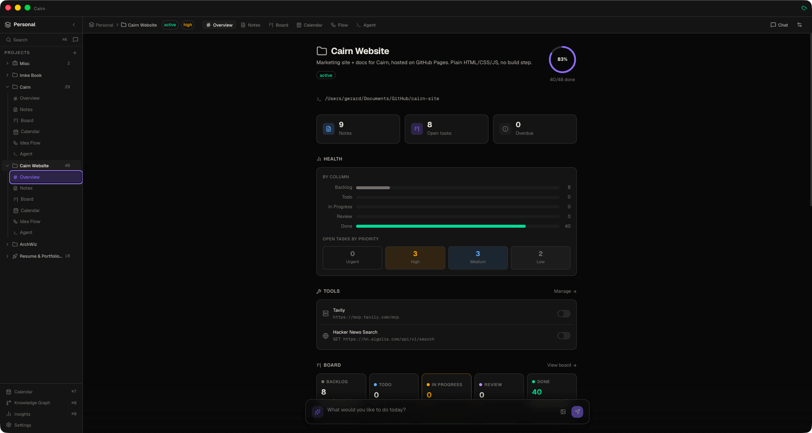
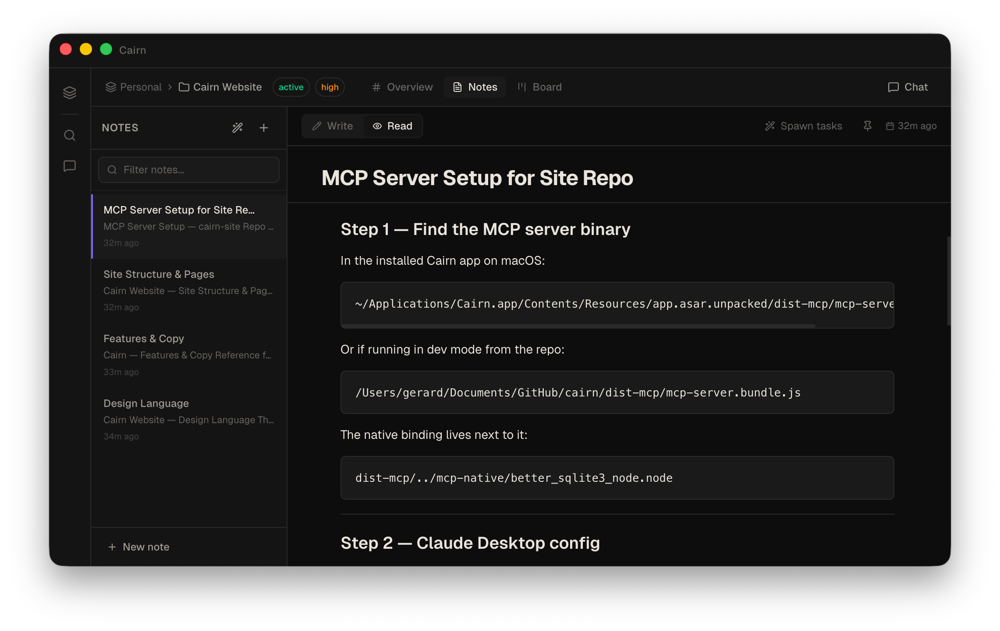
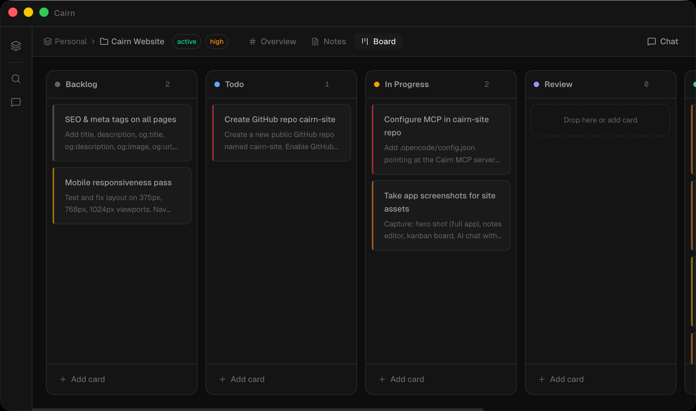
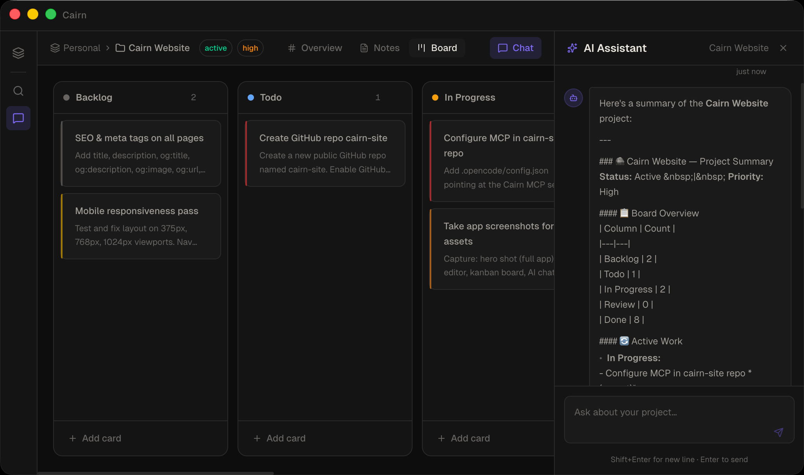
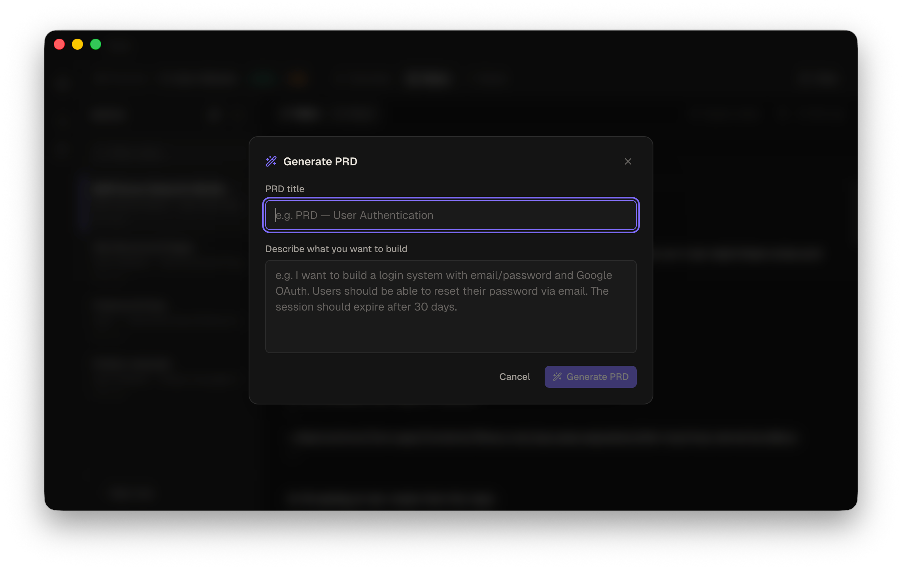

Cairn is a local-first project management app with AI built in. No account. No cloud. No subscription.

Everything lives in plain markdown files on your machine. No cloud, no account, no lock-in.
Chat with your project, generate PRDs, spawn tasks — all through your own AI endpoint.
SQLite-backed, Electron-native. Opens instantly. Works without internet.
A full markdown editor with live preview. Every note is a plain .md file with YAML frontmatter — readable and editable in any text editor, forever.

Drag-and-drop task cards across configurable columns. Priority, due dates, and note links — without the ceremony.

Chat with your project in a persistent side panel. The AI reads notes, creates tasks, moves cards, and writes PRDs — live, with a tool call activity feed so you see exactly what it's doing.

Describe a feature in plain language. Cairn generates a full PRD with user stories, acceptance criteria, and open questions — then spawns the tasks directly onto your board.

Cairn ships a bundled stdio MCP server. Connect Claude Desktop, OpenCode, Cursor — or any MCP-compatible client — and give your AI direct read/write access to your notes and tasks.
Writes appear in the Cairn UI instantly. No restart, no sync delay.
Read the MCP docs// .opencode/config.json { "mcp": { "cairn": { "type": "stdio", "command": "node", "args": [ "~/Applications/Cairn.app/Contents/Resources/ app.asar.unpacked/dist-mcp/mcp-server.bundle.js" ] } } }
Yes. Cairn is free and open source.
In a folder you choose on your own machine. A SQLite database and plain markdown files — nothing leaves your computer unless you put the folder in a cloud-synced location yourself.
Completely. The app, the board, the notes, and the AI chat (with a local endpoint like Ollama) all work without internet.
Any OpenAI-compatible endpoint. That includes OpenAI GPT models, Anthropic Claude (via compatible proxies), Ollama (local), and LM Studio (local).
Model Context Protocol is an open standard for giving AI assistants access to external tools. Cairn ships a bundled MCP server so tools like Claude Desktop, OpenCode, or Cursor can read and write your notes and tasks directly.
macOS, Windows, and Linux. Built with Electron.